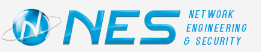
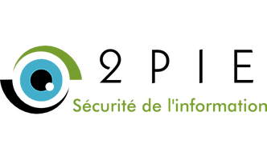

Informations
Secu'RT est un évènement gratuit et ouvert à toutes et à tous, autour du monde de la sécurité informatique. Il est organisé chaque année depuis 3 ans à Montbéliard, par le département Réseaux et Télécommunications de l'Université de Franche-Comté, avec l'aide du Hackgyver, le hackerspace de Belfort.Cette année, la SecuRT se déroulera le jeudi 10 mars de 9h à 19h, dans les locaux de l'université.
La matinée est dédiée à des conférences, données par des professionnels et acteurs de la sécurité.
L'après-midi quant à elle est consacrée au CTF : Rétro-ingénierie, applications web vulnérables, sécurité des réseaux… Venez vous mesurer aux autres équipes dans de nombreux domaines liés au monde du hacking.
N'oubliez pas d'ammener votre propre ordinateur.
Venez apprendre, comprendre et rencontrer!
Plan d’accès
Partenaires

